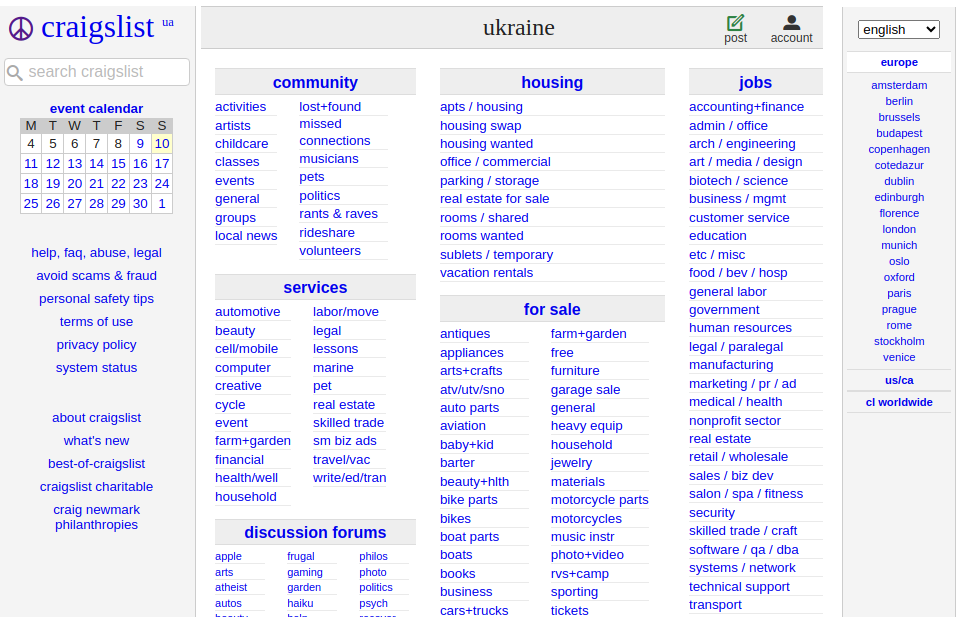
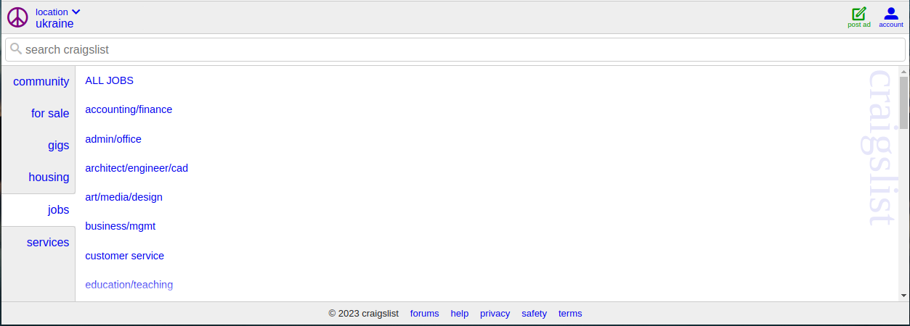

A website with poor safety design
The website example I chose was Craigslist


I like:
- It's simplicity.
- Consistency with font sizes.
- Does not contain a lot of color schemes.
I Wish:
- It was more attractive.
- It had a homepage with site information and description.
- It had a menu with main topics.
- The font size was a little bigger and more line spacing.
- It was responsive on all devices.
What If:
- It had images, banners and logos to look more apealing.
- It had a homepage consisting of information and description of the site (about, what's new, terms of use, etc.).
- At the top had a menu with the main topics (community, housing, jobs, etc.) so when clicked the corresponding link displays with proper font size and line spacing for visibility so as to avoid error type definitions such as slips when user trying to click a link especially if trying to do so quickly, it can also be done accurately.
- It was more responsive on different devices to enhance the website experience and allowing users to want to visit and stay on site longer. The way it is right now on desktop, as shown in the second screenshot above, it hides a lot of its contents when window size is adjusted.